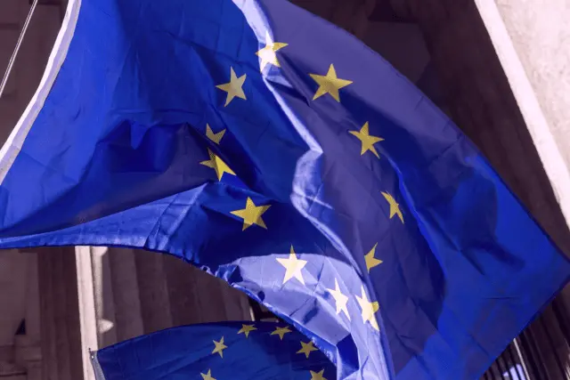

La politique étrangère européenne
Repensons le rôle de l'UE dans le monde.

Quo vadis Union européenne ?
L'Europe a été construite en tant que projet visant à garantir la paix par des liens économiques et, à cet égard, l'UE doit être considérée comme un succès. Cependant, le monde a profondément changé au cours des dernières décennies. L'Europe non, car les gouvernements nationaux n'ont jamais voulu que l'Union européenne devienne plus que ce qu'elle était déjà.
Aujourd'hui, les crises, les conflits et la guerre sont aux portes de l'Europe et leurs effets se font sentir dans toute l'Union – qu'il s'agisse des millions de réfugiés que nous accueillons ou de l'aide continue de plus de 100 milliards d'euros que l'UE a fournie et continue de fournir à l'Ukraine.
Parce que les réformes ont été évitées pendant des décennies, l'UE n'a aujourd'hui aucun poids géopolitique. On a déjà oublié les voyages embarrassants d'Ursula von der Leyen et Charles Michel en Turquie se battant la seule chaise disponible. Aujourd'hui, il s'agit de l'obligation de dépenser 5 % du PIB pour l'OTAN (le budget complet de l'UE est actuellement d'environ 1,2 % du PIB), du piètre accord commercial UE–US ou encore des négociations de paix entre les États-Unis et la Russie concernant la guerre en Ukraine : notre propre histoire est écrite par des puissances étrangères, parce que l'Europe n'est toujours pas unie. Une politique étrangère européenne est inexistante. Nous n'avons ni une voix unie, ni un canon : nous sommes une cacophonie de 27+1 tirant dans 28 directions différentes et, au final, n'allant nulle part.
Nous ne pouvons pas continuer ainsi. Dans un monde de blocs géopolitiques, les États membres isolés comptent de moins en moins. Nous devons comprendre que ce n'est qu'en unissant nos forces vers un « bloc » européen et une politique étrangère commune que nous pourrons répondre aux attentes et jouer notre rôle sur la scène internationale.
Mes points d'action
Nous avons urgemment besoin d'une doctrine de politique étrangère européenne. Voici ceux qui seraient mes axes prioritaires.
-
Adhésion et intégration
Le processus d'adhésion et d'intégration doit devenir bidirectionnel et itératif plutôt qu'une Europe à plusieurs vitesses et des décennies d'attente pour les pays désireux de rejoindre l'UE. Nous devons rendre notre Union beaucoup plus accessible en définissant un chemin d'adhésion qui, à chaque étape, donne accès à « un peu plus d'Europe ». Cet accès doit aussi pouvoir être révoqué en cas de régression pour les nouveaux membres comme pour les anciens. Dans un tel processus, la Hongrie, par exemple, aurait depuis longtemps perdu ses droits de vote en raison de ses reculs démocratiques et de la corruption.
-
Soft power
Reconstruire la crédibilité que l'Europe a perdue – et continue de perdre – sur la scène internationale sera une tâche générationnelle. Nous ne pouvons plus pointer du doigt vers d'autres pays pour leurs violations des droits de l'homme alors que nous détournons aussi le regard quand cela nous arrange. L'Europe doit parler d'une seule voix dans les conflits et utiliser non seulement son influence économique pour une politique étrangère « intelligente ». Combler le vide en reprenant des initiatives abandonnées par les États-Unis comme USAid et Radio Free Europe est tout aussi important que de rendre l'UE beaucoup plus résiliente dans de nombreux secteurs, de l'énergie aux ressources critiques, en passant par la défense et les infrastructures technologiques.
-
Dissuasion militaire
Les gouvernements nationaux sont prêts à investir des centaines de milliards d'euros dans leurs armées respectives et ont même accepté les 5 % de dépenses OTAN imposés par le président américain Donald Trump. Il y a un grand risque de gigantesque gaspillage d'argent public car, tant qu'il n'y a ni coordination, ni achats communs, ni tentative d'harmoniser l'effort, les gouvernements iront dans 27 directions différentes. Il faut consolider les diverses industries de défense nationales, mettre en place un commandant suprême commun pour les forces européennes au sein de l'OTAN, esquisser les contours d'une future armée européenne et établir une chaîne de commandement robuste. Si les États membres ne font aucun effort au niveau européen, nous allons droit vers un réveil brutal.
-
Intervention en cas de catastrophes naturelles
Nous devrions bâtir un consensus autour d'une unité militaire européenne d'intervention en cas de catastrophes, comme précurseur d'une véritable armée européenne. Que ce soit en Europe ou ailleurs, avec le changement climatique à s'intensifier, une telle branche militaire n'aura jamais de manque de missions et nous devrions l'utiliser pour établir et faire fonctionner les structures paneuropéennes que nous aurions dû avoir depuis longtemps.
Articles de blog associés
-

Qui a peur du grand méchant loup ?
(Sven Franck, )
Cette semaine, le chancelier allemand Friedrich Merz a rendu visite au président des États-Unis. Avant, il avait condamné les attaques iraniennes avec Keir Starmer et Emmanuel Macron, sans remettre en question la justification des États-Unis et d’Israël pour mettre une nouvelle fois le feu au Moyen-Orient. Il s’est également rangé aux côtés de Donald Trump pour critiquer le Premier ministre espagnol Pedro Sánchez – le seul dirigeant européen à avoir pris position. Depuis, il a fait marche arrière, mais je ne vois pas de véritable stratégie sauf s'il envisage peut-être que l’Allemagne devienne le 51ᵉ État des États-Unis. Lire la suite. -
L'Allemagne, va t-il demander de dévenir le 51eme état des États-Unis ?
(Sven Franck, )
Hier, le président américain a prononcé son discours sur l’état de l’Union à 3 heures du matin. Parfait, car je préfère dormir plutôt que d’écouter un nouvel épisode de la Quatrième Dimension. Ce qui l’est moins parfait, c’est la place qu’occupe Donald Trump ce matin dans les médias européens. Si nous voulons bouger l’Europe au niveau des États-Unis, nos médias ne devraient-ils pas donner davantage de visibilité à ce qui se passe chez nous ? Ce n’est pas comme si nous manquions de drame... Lire la suite. -

Eurobonds pour l'Allemagne, armée européenne pour le Danemark
(Sven Franck, )
Après le staccato de déclarations dociles des dirigeants européens et nationaux sur le Venezuela, Trump a désormais le regard fermement tourné vers le Groenland. Le Danemark, quant à lui, a refusé il y a plusieurs mois tout soutien militaire de l’UE et des États membres. Face à la réalité brutale, faut-il reconsidérer cette position ? Lire la suite. -

First we take Maduro, then we take Greenland?
(Sven Franck, )
Alors que les États-Unis ne cachent plus leurs objections à une Europe unie, que certains États membres disposent des armes nucléaires et restreignent la liberté d'expression, on peut se demander quand le Danemark perdra le Groenland ou quand des hélicoptères exfiltreront Emmanuel Macron après l'inéligibilité de Marine Le Pen aux présidentielles. Sommes-nous prêts à la politique étrangère façon MAGA ? Lire la suite. -

Avoirs gélés : de Moscou avec amour
(Sven Franck, )
La tension monte à l’approche du Conseil européen sur le financement de l’Ukraine. La question centrale est de savoir si et comment « dégeler » les 210 milliards d’euros d’avoirs russes détenus par Euroclear en Belgique afin de financer la défense et la reconstruction de l’Ukraine. Entre les menaces de poursuites judiciaires de la Russie et la volonté des États-Unis de contrôler les dépenses, la pression sur nos dirigeants nationaux monte. Lire la suite. -

Quid de la stratégie Européenne de la sécurité ?
(Sven Franck, )
La semaine écoulée a été une révélation pour les transatlantistes, avec la publication de la National Security Strategy américaine et Elon Musk, contrarié par une amende de 140 millions d’euros pour violation du Digital Services Act, appelant à la dissolution de l’UE. La réponse de l’Europe : on est BFF, on l’a toujours été, on le sera toujours. Vraiment ? Lire la suite. -

5% pour l'OTAN
(Sven Franck, )
C'est le sommet de l'OTAN et Mark Rutte a déjà décidé du résultat avant toute discussion, dans un message poétique : « Nous allons désormais consacrer 5 % du PIB à la défense » — bien plus que les 2 % par an auxquels les membres de l'OTAN se sont engagés. Lire la suite. -

Il faut un trilogue pour la politique étrangère européenne
(Sven Franck, )
Récemment, j'ai vu un discours de Jeffrey Sachs au Parlement européen où il critiquait le fait que l'UE n'a toujours pas de doctrine pour une politique étrangère européenne. Je suis d'accord. Lire la suite.